20 candidates for Emmet's technique library (session 3D, H-26). Each was found in your instruction books and ranked by how widely official models in the LDraw OMR join its key parts (1315 sets mined). Each picture is a render of my sketch of it in Emmet's DSL, which validates with no findings; an accepted sketch becomes the technique, with its tests and render, and a rejected one is dropped. Nothing is taken from the models' files or the books' pages (D-48). Every candidate starts as Accept: switch the ones you don't want, add a note if it helps, then copy your answers and paste them to Claude.
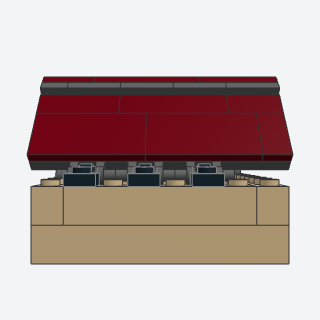
tiled_roof_panelA steep roof of two hinged panels, each a plate base covered with flat 2-deep tiles in running bond, so the courses read as overlapping roof tiles.
A steep old-town roof that reads as rows of flat roof tiles: two hinged panels clad in tiles laid in running bond over a darker base.
Note: VARIANT of hinge_roof: the same clips (4081b), handle plates (2540), and angle solving. It differs in the panel: a dark base (a hinge row, then one plate 2 wide per column up the panel) under 2-deep tile courses in running bond, where hinge_roof lays one-color tile strips whose joints line up. Needs depth 8 or more (hinge_roof takes 6) because each base column is a single plate. The book clips 2 x 2 hinge plates to bars on the wall top and hangs the bottom course a plate over the edge; here hinge_roof's clips stand in, and the bottom course is flush because the clips sit at the edge.
x, y, z, length, depth, color, base, clip_color, titlebatch-8/tiled_roof_panel.py87079 + 26603 + 4081b + 2540 (some of its parts weren't confirmed from the book; I'd pin them when writing it)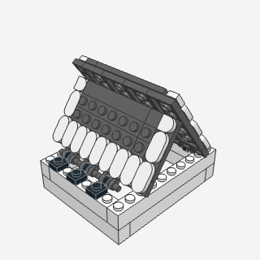
plate_shingle_roofA roof of two hinged panels of plates laid studs up, so the rows of studs read as shingles, with a pale trim of round-ended tiles along the eaves and the gable edges.
A storybook roof with exposed studs for shingles and a pale scalloped trim along the eaves and gable edges.
Note: Sits on hinge_roof's clip frame. The book's Sand Blue trim tiles (1126) were never made in Sand Blue, so the default trim is White. The eave trim is 1 x 2 round-ended tiles pointing down the roof; they also tie the panel's base together. For one side that swings open, see half_roof_hinge.
x, y, z, length, depth, color, trim, clip_color, titlebatch-8/plate_shingle_roof.py1126 + 24246 + 4081b + 2540 (some of its parts weren't confirmed from the book; I'd pin them when writing it)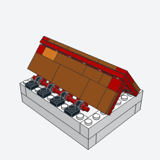
tile_stripe_shinglesA terracotta roof of two hinged plate panels with rows of tiles across the slope every other stud, the studs between them left bare, and a few tiles in a lighter color so the roof doesn't read flat.
A terracotta or Mediterranean roof that doesn't read flat: stripes of tiles every other row with bare studs between, plus a few lighter tiles placed by a seed.
Note: The book adds the stripes as a texture over an existing plate roof. Here it's a whole roof on hinge_roof's clip frame, because a panel built as a submodel can't take a pass afterwards. The eave stripe skips 2 x 3 tiles, which were never made in Dark Orange.
x, y, z, length, depth, color, stripe, accent, every, seed, clip_color, titlebatch-8/tile_stripe_shingles.py2431 + 3069b + 87079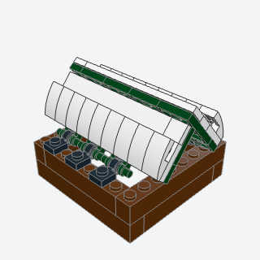
studs_up_snow_roofA roof deep in snow, two hinged panels of white plates laid studs up on a dark underlayer, with a rounded lip of white curved slopes along each eave.
A winter cottage roof deep in snow: white plates studs up on a dark underlayer, with a rounded snow lip of curved slopes along the eaves.
Note: VARIANT of hinge_roof and snow_cap. The book's lip overhangs the eave by a stud. Here the clips sit on that edge, so the lip of curved slopes stands on the panel's eave row, 2 plates proud. The book hinges the panels at the ridge too; here they meet as in hinge_roof.
x, y, z, length, depth, color, snow, clip_color, titlebatch-8/studs_up_snow_roof.py11477 + 4081b + 2540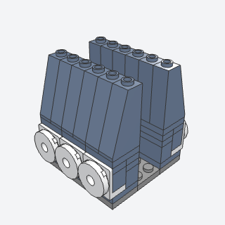
mansard_moduleA steep mansard roof face built from 2-stud modules, each two slopes 75 over a bracket that carries a small round window at the eave.
A Victorian or French civic roof: a steep mansard face of 75-degree slopes with a small round window every two studs, in runs that can face any side of a flat roof.
Note: The book's scroll-edged ornamental plate behind each window and the gray gutter at the base are left out (no clean place on the grid). The corners and the fenced flat top aren't built. The run is a submodel on its own strip of plates, which ties the modules together; it's placed turned for each facing.
x, y, z, modules, facing, color, trim, titlebatch-8/mansard_module.py4460b + 99207 + 15535 (some of its parts weren't confirmed from the book; I'd pin them when writing it)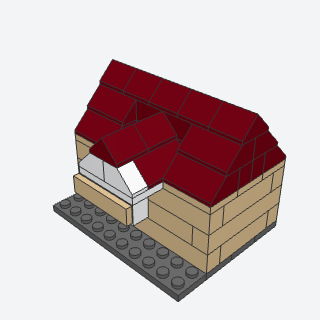
cross_gableA 45° gable roof with a small gable across its front face, over the door, that breaks the long roof line and can carry a nameplate.
The Cottage's gable over the door: a small cross gable that projects from the front of a 45-degree roof, with a white face and a hanging nameplate.
Note: VARIANT of gable_roof and roof_dormer. It lays the whole roof itself, course for course like gable_roof (so ridge_cap and roof_eaves_overhang_frame compose the same way), because a gable_roof that's already laid can't leave the gap. The valleys stay open steps, with no valley slopes. The book's printed nameplate becomes a brick 1 x 4 with side studs faced with a plain tile 1 x 4.
x, y, z, length, depth, at, project, color, gable, nameplate, titlebatch-8/cross_gable.py3038 + 3043 + 30414 + 2431 (some of its parts weren't confirmed from the book; I'd pin them when writing it)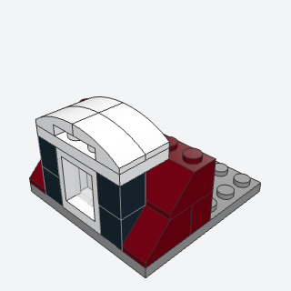
curved_dormerA small dormer with a rounded roof of curved slopes, dark cheeks either side of its window, set in the bottom course of a roof of 45° slopes.
A small village or Victorian dormer with a rounded white roof and dark cheeks, set into a slope roof's bottom course.
Note: VARIANT of roof_dormer (same box and the same 'returns a function for the roof' order). There's no cone finial, because the curved slopes have no stud on top. The cheeks are black 1 x 1 bricks, not the book's Wedge 3 x 2 (6564/6565).
x, y, z, color, cheeks, roof, titlebatch-8/curved_dormer.py11477 + 60592 + 3005 (some of its parts weren't confirmed from the book; I'd pin them when writing it)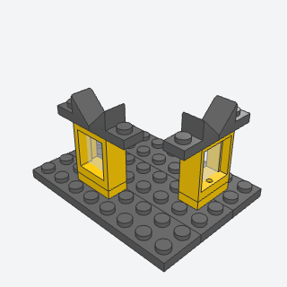
mini_dormerA tiny dormer that stands on a studs-up roof, a window 1 x 2 x 2 on a plate with two slope plates leaning together over it as its gable.
A tiny dormer that needs no cut in the roof: it stands on any studs-up roof (plate_shingle_roof, a flat roof).
Note: VARIANT of roof_dormer. The example stands it on flat plates. Built inside a hinged panel's function, it would lean with the panel.
x, y, z, facing, color, roof, titlebatch-8/mini_dormer.py60592 + 15672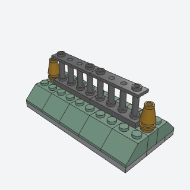
roof_crestingAn ornamental rail along a roof's ridge or a flat roof's edge, spindled fences between two finials.
The ornamental iron or gold rail along a Victorian ridge or a flat roof's edge.
Note: gable_roof's double-slope ridge (3043) has no studs, so a ridge needs a row of bricks between the top slopes (ridge_cap's row without its caps), as in the example. The book's bars-in-clips version for a bare sloped ridge isn't done.
x, y, z, length, color, finial, titlebatch-8/roof_cresting.py30055 + 4589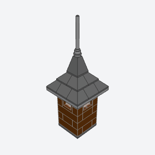
pyramid_spire_towerA square brick tower 4 x 4 with a window in each face at the top, a corbel plate that overhangs a stud all round, and a steep pyramid roof of slopes ending in a spire.
A civic, fire-station, or church tower: a square brick tower with windows at the top, a corbel, a steep pyramid roof, and a spire.
Note: VARIANT of turret, square. The book's single 4 x 4 pyramid part (id not confirmed) becomes two rings of corner slopes under the quadruple convex slope 3688. The pennant on the spire is left out. The windows are 60592 with glass, not the book's arched frame.
x, y, z, rows, color, roof, trim, titlebatch-8/pyramid_spire_tower.py3045 + 3688 + 3958 + 3957b (some of its parts weren't confirmed from the book; I'd pin them when writing it)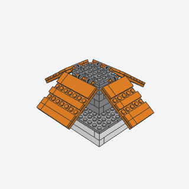
ribbed_hip_roofA roadside hip roof, four panels of chunky ribs hanging from the edges of a raised flat center and sloping down past the walls on every side.
A bold roadside diner roof: chunky ribbed panels sloping down on all four sides from a raised flat center.
Note: VARIANT of hip_roof and hinge_roof: four clip-hinged panels hang from a raised deck, turned down by `angle`, and the core is as tall as the panels need to clear the walls. The book covers the hip seams with clipped hip caps; here the hips stay open, as triangular gaps that widen toward the eaves. The rooftop units aren't added. The example has 107 parts.
x, y, z, length, depth, inset, rows, angle, color, base, clip_color, titlebatch-8/ribbed_hip_roof.py4081b + 2540 + 2431 (some of its parts weren't confirmed from the book; I'd pin them when writing it)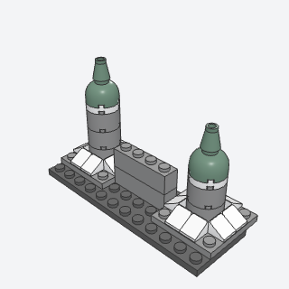
tapered_tower_capA small round tower for a micro or mini castle, a shaft of round bricks 2 x 2 on a plinth that slopes out at its foot, capped with a dome and a cone finial.
A tiny turret for a micro or mini castle: round bricks on a sloped plinth, a contrasting collar, and a sand green dome with a finial.
Note: VARIANT of turret, mini scale. The book's buttresses (small wedges clipped on) become 1 x 1 cheese slopes round a plinth. The dome is 30367c, since 30151 was never made in Sand Green.
x, y, z, rows, color, trim, cap, titlebatch-8/tapered_tower_cap.py3941 + 30367c + 4589 (some of its parts weren't confirmed from the book; I'd pin them when writing it)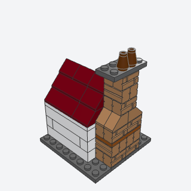
banded_chimneyA stout outside chimney against a gable wall, in brick-textured bricks with a darker band every few courses, stepping in with slopes at the shoulder and rising past the ridge to a cap and two pots.
The Cottage's outside chimney: brick texture with darker bands against a gable end, stepping in at the eave and rising past the ridge to its pots.
Note: VARIANT of chimney_stack. It steps in from 4 wide to 2 with four 45-degree slopes. The book steps 3 wide to 2, which can't center on the grid. It faces any of four ways. No smoke plume. It builds every course in its own steps; for the Cottage, call it with rows and above split across the wall and roof stages if a piece per wall course is wanted.
x, y, z, rows, above, band_every, facing, color, band, cap, pots, titlebatch-8/banded_chimney.py98283 + 3040b + 4589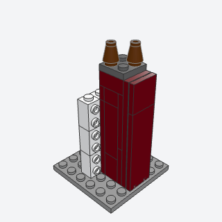
sideways_chimney_columnA tall, flush chimney built lying down as a sub-assembly, then stood up against a wall's side studs, so it rises past the eaves in one smooth piece.
A tall, smooth chimney up the outside of a wall: built lying down as a sub-assembly and stood up on the wall's side studs, so it rises past the eaves in one piece.
Note: VARIANT of chimney_stack. The wall needs side studs at z + 1.25 + 2.5k: 22885 in every 5-plate band, as in the example. The book fixes the column with brackets. The column faces +x only (one Rot(x=90, z=90)); the other facings aren't done.
x, y, z, length, color, cap, pots, titlebatch-8/sideways_chimney_column.py22885 + 3001 (some of its parts weren't confirmed from the book; I'd pin them when writing it)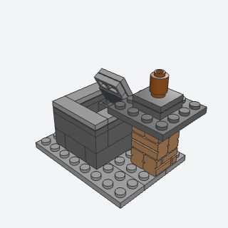
roof_hatchA small hatch box on a flat roof, a curb of bricks a brick or two tall around a 2 x 2 opening, with a lid on hinges that stands open.
A small detail for a town building's flat roof: a hatch box beside the chimney whose lid stands open.
Note: VARIANT of hatch_on_hinge, which it calls for the lid, on a curb of bricks. The book hinges a door in the box's face; here the lid on top is hinged.
x, y, z, rows, angle, color, lid, titlebatch-8/roof_hatch.py3937 + 6134 (some of its parts weren't confirmed from the book; I'd pin them when writing it)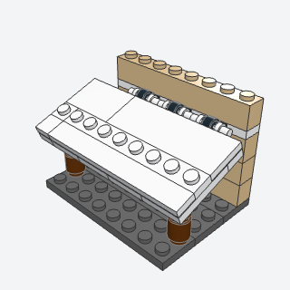
lean_to_awningA shallow shed roof over a porch or a window, a panel of plates hinged to the wall on clips and tipped down to rest on two posts.
A shallow shed roof over a porch or a window, hung from the wall and resting on two posts, as on the Cottage's porch.
Note: VARIANT of door_hood and canopy. It hinges on clips and handle plates (hinge_roof's), not the book's hinge plates. It lays the wall's clip course and returns its top for the wall to continue. The posts are cut to fit under the panel, within 0.1 plate. Nothing joins them to it, so the panel is held by the clips alone.
x, y, z, length, depth, angle, ground, color, posts, clip_color, titlebatch-8/lean_to_awning.py4081b + 2540 + 3062b (some of its parts weren't confirmed from the book; I'd pin them when writing it)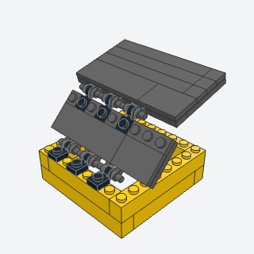
half_roof_hingeA roof of two panels whose back half lifts like a lid on a hinge at the ridge, to show the attic, while the front half stays fixed on the front wall.
A dollhouse roof whose back half lifts like a lid on a ridge hinge to show the attic, while the front half stays fixed.
Note: VARIANT of hinge_roof. The ridge hinge is clips on the front panel's top edge holding the back panel's handles. Each panel's half-stud offset makes the back panel sit half a stud along from the front one. The notch round a chimney isn't done. It validates clean shut (open=0) through open=90.
x, y, z, length, depth, open, color, clip_color, titlebatch-8/half_roof_hinge.py4081b + 2540 (some of its parts weren't confirmed from the book; I'd pin them when writing it)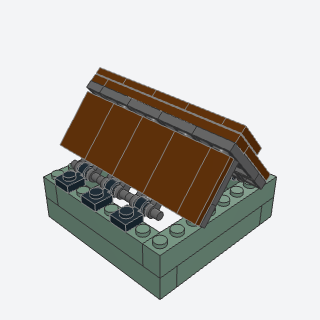
overlap_tile_roofA smooth, studless roof of two hinged panels whose courses of tiles lap like boards, each course a plate higher than the one below and overhanging its top edge.
A smooth, studless roof of long lapped boards, each course a plate proud of the one below, for a large-scale or cartoon town building.
Note: VARIANT of hinge_roof and tiled_roof_panel. The book hinges the panels at the ridge with hinge plates and rests them on the gables. Here they hang on hinge_roof's eave clips. The panel thickens toward the ridge, a plate per course, and the angle solving allows for it.
x, y, z, length, depth, color, base, clip_color, titlebatch-8/overlap_tile_roof.py26603 + 63864 + 4081b + 2540 (some of its parts weren't confirmed from the book; I'd pin them when writing it)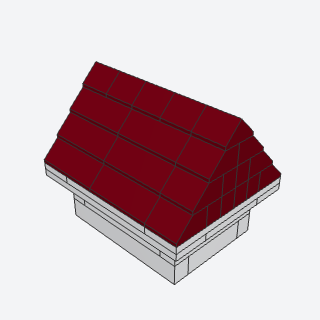
roof_eaves_overhang_frameA lift-off frame for a roof, a stud bigger than the walls all round so the roof's eaves and gables overhang them, which sits on four corner studs of the tiled wall tops and lifts straight off.
The Cottage's lift-off roof: a frame a stud bigger than the walls all round, so a 45-degree roof built on it overhangs the eaves and gables and lifts straight off.
Note: ALTERNATE, in place of bar_frame_canopy. VARIANT of lift_off_roof_seat: the same tiled wall tops with four corner studs, but a 2-wide frame overhanging a stud, and a roof= callback that builds the roof on the frame inside the submodel. The book locates its frame with lugs hanging inside the walls onto fully tiled tops. To the validator, a frame resting on tiles is floating, so the corner studs stay.
x, y, z, length, depth, roof, color, frame, titlebatch-8/roof_eaves_overhang_frame.py3024 + 3069b + 3832 (some of its parts weren't confirmed from the book; I'd pin them when writing it)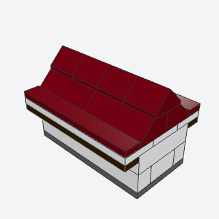
eaves_fasciaA finished eave edge for a roof that overhangs its walls, a strip along the eave in front of the roof's first slopes: a contrasting tile strip, a dark fascia under the edge, a kicked row of cheese slopes, or a rounded lip of curved slopes.
A finished eave for any roof that overhangs its walls: a contrasting tile strip, a dark fascia band, a kicked row of cheese slopes, or a rounded lip, in front of the first slopes.
Note: From the houses-cottages style notes, not one page. It returns (y, depth) for the roof behind it, so it composes with gable_roof on roof_eaves_overhang_frame's overhang. 'fascia' hangs plates under the overhang. If anything lies below them (the example's first base plate did), the validator warns that the way in from below is closed even with 6 plates of room: a validator gap. The example keeps the base out from under the eaves.
x, y, z, length, depth, style, sides, color, trim, titlebatch-8/eaves_fascia.py2431 + 3710 + 54200 + 11477 (some of its parts weren't confirmed from the book; I'd pin them when writing it)